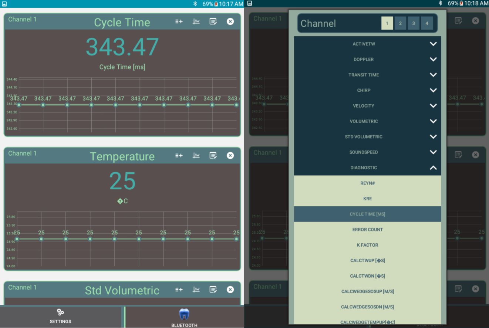
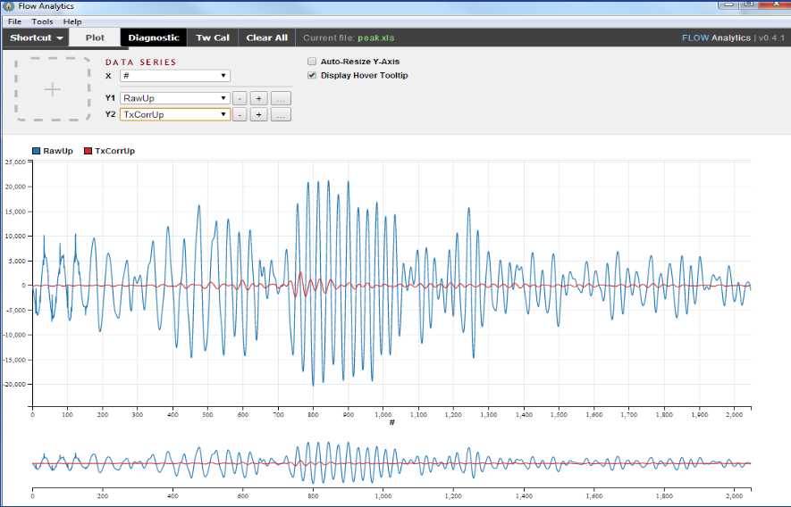

ABOUT
What's up?

I'm Darwin Ding, a programmer and engineer at Rensselaer Polytechnic Institute.
I'm primarily a backend developer in C/C++/Java, but I've got experience with front-end dev, android app dev, game dev and much, much more!
If I'm not coding, I might be lifting, playing piano, playing chess or cooking!
Want to share ideas? Reach out!
WORK
AI Competition Framework
Fall 2016 Semester Project

Currently developing the framework to support RPI's very first AI competition! I'm in charge of everything from designing and implementing each part to making sure it's an accessible challenge still rich with competitive depth.
This project is built in full-stack JS on the MEAN stack.
Real-time NLP NoteReader
Summer 2016 Intern Project at Epic Systems

In the real world, doctors have to deal with a lot of duplication. A patient coming in with a sore throat will not only appear in the doctor's freehand doctor's notes for the visit, but also in the workflows doctors have to fill out after each visit.
This project aims to solve that problem by filling out the workflows using doctor's note input in real time using NLP. Done in full-stack Python using PySpark, Flask and NLTK.
Project Blue
Summer 2015 Intern Project at GE Oil & Gas
Reinvented the way field engineers would interface with a flowmeter by developing an Android tablet app that handled flowmeter configuration, real-time data collection and graphing.
Flow Analytics
Summer 2014 Intern Project at GE Oil & Gas
Developed a desktop application to handle post-processing and data visualization for field test data. Written with D3js and Node.JS